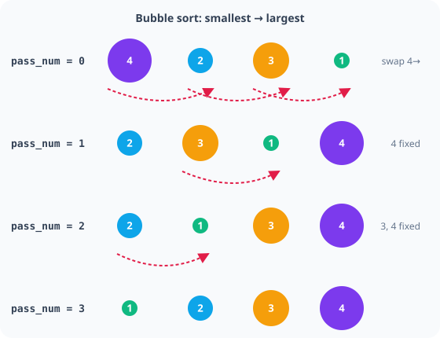

Unit 5 · Big Idea 4
Every Second Counts
Student Lab · Measuring, Storing, and Making Sense of Performance
Student PIN:
Overview
Every lab so far has asked "did it work?" Today's question is different: "did it get better?" You can't answer that without a number. Today you'll time a real mission run, store repeated timing results the same way you stored pose data in Big Idea 1, and then write code that actually studies that stored data — finding the best and worst runs, and putting them in order.
The Big Idea of This Unit
A system that never measures its own performance can't tell whether a change actually helped. Feeling faster isn't the same as being faster — you need a number, and you need to keep it.
By the end of this activity you will be able to:
- Use
systime()to measure how long a routine actually took. - Use the modulo operator (
%) to turn a raw time value into something readable. - Store repeated measurements in an array, and use a boolean variable to track a running yes/no answer inside a loop.
- Write a linear search to find the best and worst value in a data set.
- Write a simple sort, and reason about how its cost changes as the data set grows.
Phase 1 — The Mission: Restack & Shelve
The run
Pick up 2 spilled cubes and stack one ON TOP OF the other, placed on top of the Large Green Cube.
This single stacking action scores three things at once: Mission 12's Base Mission (two spilled cubes forming a valid stack), and Mission 16's Base and Bonus Mission (one, then a second, spilled cube ON TOP OF the Large Green Cube) — confirmed directly by the rules' own scoring examples. One clean action, most of the points on the board for these two missions.
Say the mission back in your own words. Why does stacking the cubes on the Large Green Cube, instead of just on each other, matter for how many points you earn?
Phase 2 — Concept: Measuring and Reading Elapsed Time
You've stored numbers in double, int, and char so far. Timing needs a new one: unsigned long.
long is an integer type, like int, but built to hold larger whole numbers — useful here because a running clock value climbs quickly and keeps climbing the whole time your robot is on. unsigned means the variable can never be negative; in exchange for giving up negative numbers, it can count even higher using the same amount of memory. A timer value is never negative and never needs to be — a perfect match for unsigned long.
systime() returns an unsigned long that keeps climbing the whole time your robot is powered on — but the documentation doesn't spell out the exact unit, so don't guess. Find out for yourself, the same way you found ticks_per_inch by measuring instead of assuming:
Run that. A 5-second wait should make the unit obvious from the size of the number you get back.
What number did you get, and what does that tell you about the unit systime() counts in?
Once you know the unit, timing any routine follows the same two-line pattern: capture the time before, capture it again after, subtract.
A raw elapsed value is hard to read at a glance. % is the modulo operator — it gives you the remainder of division, not the quotient. That's exactly the tool for splitting a total into readable parts:
% is new — you've used / plenty, but division only gives you how many whole groups fit. Modulo gives you what's left over after those whole groups are removed.
Careful: you're about to see two completely different jobs for the % symbol in the same few lines. In total_sec % 60, it's math — the modulo operator, computing a remainder. In "%lu" inside a printf string, it's not math at all — it's a placeholder telling printf "put a number here." Same symbol, two unrelated meanings, depending on whether it's sitting inside quotes or out in your code doing arithmetic.
If total_sec is 197, what do 197 / 60 and 197 % 60 each give you, and what do those two numbers mean together?
Phase 3 — Build: Time the Restack Run
Wrap your Restack & Shelve routine in the timing pattern from Phase 2, using your own library calls.
Why does init_time get captured before the mission code runs, and elapsed get calculated after it finishes — what would go wrong if you calculated elapsed too early?
Phase 4 — Run It 4 Times
Reset the 2 spilled cubes to their starting positions between attempts, and run the full mission 4 separate times. Record each printed elapsed time (in seconds — convert from the MM:SS your program prints).
| Trial | Printed MM:SS | Elapsed in seconds |
|---|
Phase 5 — Concept: Studying Your Own Data
Back in Big Idea 1, pose[3] grouped three related values under one name. Today's array groups four results from the same measurement, repeated:
A for loop has three parts, always in the same order, separated by semicolons:
int i = 0— runs once, right at the start: create a counter and set where it begins.i < 4— checked before every trip through the loop: keep going as long as this is true.i++— runs at the end of every trip: add 1 to the counter.
The new part today isn't the loop itself — it's what you do with i inside it. Since array slots are numbered, i can walk straight into your array as an index: times[i] means "whichever slot i currently points to." As i counts 0, 1, 2, 3, times[i] visits every slot in the array in order.
A search uses that same walk to check each value against the best one found so far:
This checks every element exactly once — that's why it's called linear: the work grows in a straight line with the size of the array.
Sorting means trading two values' positions. That takes three lines, not two — if you just wrote times[i] = times[i+1]; then times[i+1] = times[i];, the first line would already overwrite times[i]'s original value before you had a chance to move it into times[i+1]. You need a temporary holding spot:
Picture 4 people standing in a line, out of height order. Walk down the line one time: compare each pair of neighbors, and swap them if the left person is taller than the right person. After one full walk, the tallest person has "bubbled" to the top like bubbles rising through water. Do that same walk a few more times, and eventually everyone's in order. That "bubbling" to the top gives this algorithm its name: bubble sort.
Walk through it by hand with 4 index cards showing your own 4 times, out of order. Do the swaps yourself, pass by pass, until they're sorted. For only 4 values, 3 passes is always enough to guarantee a full sort — that's why the outer loop stops at pass < 3.

The version above always does all 3 passes, even if the line was already sorted after pass 1. You've used booleans inline before, inside an if condition with && or ||. Here's a new use: store a boolean's answer in a variable that carries a true/false memory from one pass into the next.
If an entire pass finds nothing out of order, swapped never gets reset to 1, the while loop's condition goes false, and the sort stops — without wasting a pass it didn't need.
Walk through the simple version by hand on paper first, with your own 4 numbers. Then answer: why does checking swapped let the improved version stop early on data that's already close to sorted? What's stored in the variable at the moment it does?
Your search touched 4 values once each. Your sort, in the worst case, compared neighboring pairs across multiple passes over those same 4 values. Now imagine 100 recorded times instead of 4.
Would the search's work grow by roughly 25× (matching the 25× growth in data, from 4 to 100)? Would the sort's worst-case work grow by exactly 25×, or by something faster than that? This — how the amount of work grows as the data grows — is what computer scientists mean by algorithm efficiency.
Phase 6 — Build: Analyze Your Times
Using your 4 recorded values from Phase 4, write the full analysis: hardcode the array, search for fastest/slowest, sort it, and report all of it.
Requirement check
4 real trial times recorded and hardcoded into times[4]. Fastest and slowest found by search. Full array sorted using the boolean-flag loop. Both results printed.
Once your array is sorted, where do the fastest and slowest values sit in it? Could you have skipped writing a separate search entirely, if you'd sorted first?
Phase 7 — Connect & Reflect
AI Literacy Thread
A system that never measures its own performance can't tell whether a change actually helped.
Every real engineering team does exactly what you just did: time something, run it more than once, store the results, and actually look at the numbers instead of trusting a gut feeling. A search engine times how long a query takes across millions of runs. A game studio times level-load times across every playtest. None of them trust a single run — and none of them just eyeball the numbers either; they sort them, find the extremes, and watch how those numbers change as the system scales up.
Complete the reflection on your own.
1. Walk through the init_time / elapsed pattern in your own words — what does each line actually do?
2. What does modulo (%) give you that regular division (/) doesn't?
3. What was swapped actually tracking, and why does a stored boolean matter here in a way that an inline &&/|| check couldn't?
4. Complete in 2–3 sentences: "A system that never measures its own performance can't tell whether a change helped. This means that before I claim my robot got faster, I should..."
Extension Challenges
Finished early? Try one or more of these.
Extension A — Time a Different Metric
- Apply the same array + search + sort pattern to a different measurement — for example, how many degrees off-target your last 4 turns landed. What changes in your code, and what stays exactly the same?
Extension B — Watch the Early Exit
- Add a
printfinside thewhile (swapped)loop that prints the value ofswappedat the end of each pass. Run your sort on data that's already close to sorted — how many passes does it actually take beforeswappedstays 0?
Extension C — Scaling to 8
- If you had 8 trial times instead of 4, how would you need to change the array declaration and the loop bounds? In the worst case, roughly how many more comparisons would the sort need — twice as many, or more than that?
When you are finished, press the button to turn in your work and save a copy.
KIPR · Botball Explorer · Unit 5 Big Idea 4